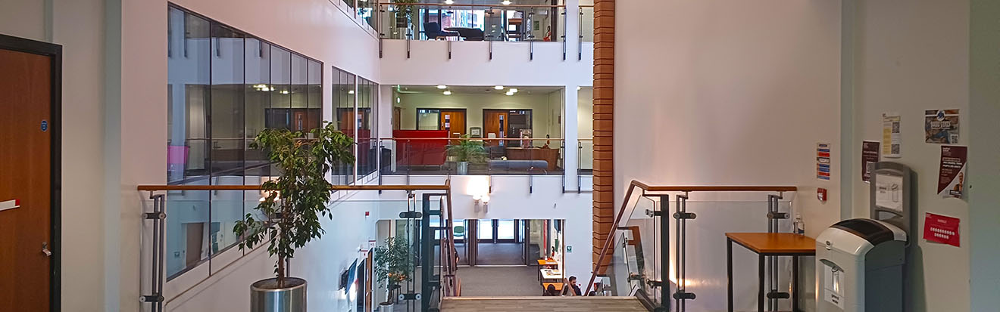

Main Content
Rules Governing the Use of the Resource Services
Introduction
All students and staff of the College are entitled to register as members of the Learning Resources and to use the facilities of the Learning Resources for the purpose of their course of study or College employment.
Membership may also be extended to other individuals and to persons nominated from other organisations: a fee is usually charged. Access to the Learning Resources for study purposes may be made available to non-members by arrangement. Details are available in the External Services leaflet.
Use of Learning Resources facilities implies acceptance of the Learning Resources rules printed below. These are designed to protect the interests of all users of Learning Resources and to ensure that the College operates within the law and can carry out its functions efficiently and effectively. The Learning Resources rules apply in principle to all Learning Resources sites, including workstation rooms and site libraries, notwithstanding some variations in practice in the site libraries. Admission to the Learning Resources is conditional upon observation of the rules and the staff of the Learning Resources are empowered to enforce them.
Breaches of the rules may be dealt with by specific Learning Resources Disciplinary Action (see below), including the withdrawal of some or all Learning Resources facilities, and if appropriate by invoking the College’s Regulations for Students, in the case of students, or in the case of staff through the appropriate College procedures as set out in the Staff Handbook.
Rules
A. Access:
- The use of Learning Resources facilities is normally limited to use for the educational and other purposes of the College.
- All individuals wishing to become members of the Learning Resources must comply with the registration procedures. These include an undertaking to abide by Learning Resources rules.
- Individuals or organisations who are not eligible for membership but have good reason to use the Learning Resources may be admitted, by arrangement, for purposes of study only. Procedures for seeking admission are outlined in the External Services leaflet. Non-members must sign the Visitors' Book on each visit, and may be required to produce written identification. Study use does not include access to the College's Academic Network.
- ID cards issued by the College or Learning Resources are not transferable from one person to another. The person named on each card is responsible for all items borrowed on it and is liable for the cost of replacement of the card or items borrowed on it in the event of loss or damage.
Users of the Learning Resources are reminded that they must be willing to show ID cards or other identification when requested to do so by College staff.
